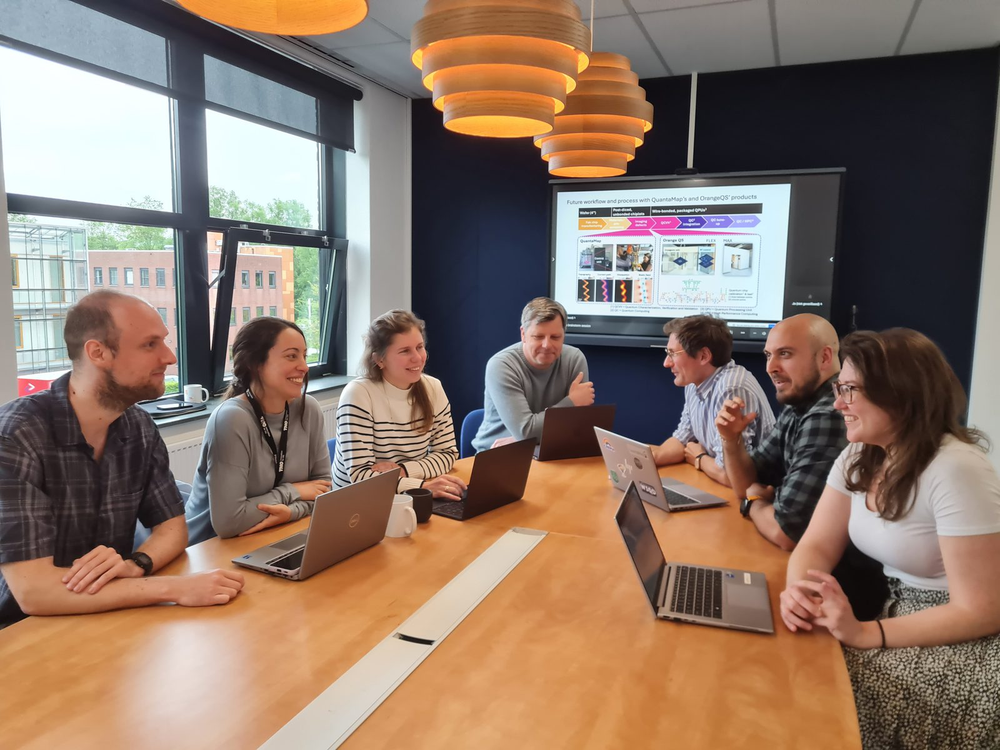

QORRELATIONS project starts: Scalable Test and Measurement for Superconducting Quantum Chips

Within the Kansen voor West project QORRELATIONS, QuantaMap, Orange Quantum Systems, VSL, and TNO are developing a scalable test and measurement process for superconducting quantum chips. The consortium covers the full chain from research and chip development to defect analysis, electrical characterisation, metrology, and industrialisation — with the explicit aim of moving beyond the laboratory towards scalable production.
The bottleneck: defect detection at scale
Current superconducting quantum processors contain on the order of a few hundred qubits; useful fault-tolerant applications will require hundreds of thousands of high-quality qubits. At those volumes, the sensitivity of qubits to fabrication defects becomes the dominant production constraint: minor material or fabrication deviations directly degrade chip performance, and existing characterisation workflows do not scale.
QORRELATIONS addresses this by developing test and measurement methods that expose defects earlier in the production process, shortening feedback loops and reducing the cost per validated chip. If you cannot measure the performance of quantum chips accurately and find root-causes for performance degradation, you cannot produce them reliably.
Division of work within the consortium
QuantaMap develops technology for imaging and analysing defects in quantum chips, and leads the industrialisation and value-chain integration effort.
Orange Quantum Systems builds systems for electrical testing of quantum chips.
VSL, the Dutch national metrology institute, works on precision measurement methods, validation, and standardisation.
TNO contributes research and development on the chip technology itself.
The consortium's longer-term goal is to develop these methods into recognised control points within the international quantum value chain — quality and metrology standards analogous to those in semiconductor manufacturing — thereby anchoring part of that chain in South Holland.
Building on the regional ecosystem
QORRELATIONS builds on the quantum cluster around Delft and Leiden (TU Delft, Quantum Delta NL, and a growing base of startups, scale-ups, and suppliers). It is complementary to the ERDF project HAVIK (QuantWare, Qblox, Delft Circuits), which targets 2Q-gate fidelities above 99% within quantum hardware itself: where HAVIK focuses on gate performance, QORRELATIONS focuses on scalable testing, measurement, and quality control during production.
Facts & Figures
Project number: KVW3-00538
Project name: QORRELATIONS
Programme: Kansen voor West 3 (ERDF)
Project period: 1 July 2026 – 31 March 2028
Lead partner: QuantaMap
Consortium: QuantaMap, Orange Quantum Systems, TNO, VSL
Total project size: €2,000,448.59